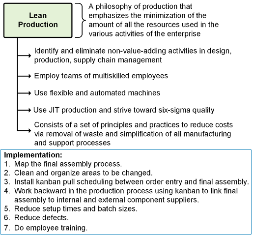
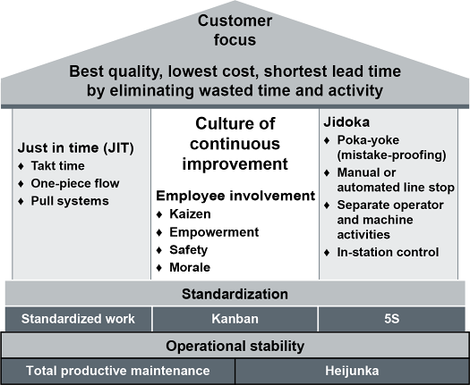
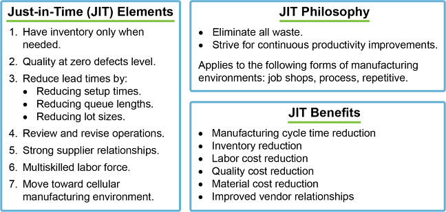

Toyota’s Taiichi Ohno identified 7 deadly wastes; the 8th (unused talent) was added later:
8 Lean Objectives:

The House of Toyota (House of Lean) is a framework explaining the scope of lean. It has four parts:

Value Stream Mapping (VSM): a paper-and-pencil tool that maps the flow of material and information for a product family from supplier to customer. Reveals where waste exists; used to design future-state lean flows.
Kaizen Event / Kaizen Blitz:
Five Ss (5S Workplace Organization):
Setup Time Reduction: 5 steps to reduce changeover time:
TPM aims to eliminate:
TPM engages all levels and functions — operators perform routine maintenance; maintenance department handles complex repairs. Shifts from reactive to proactive maintenance culture.
3 JIT basics:

Click card to flip · Use arrows or shuffle to practise